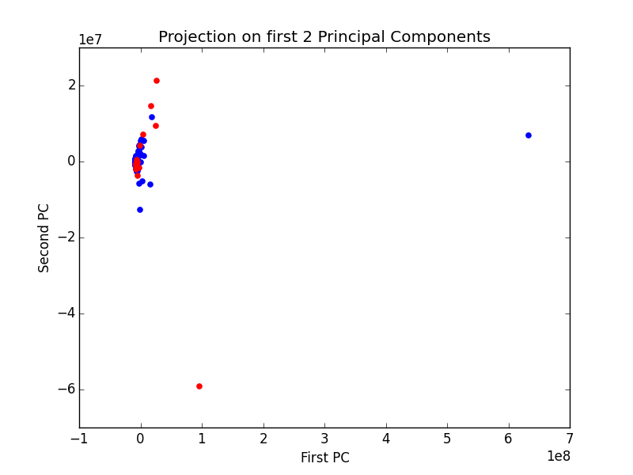
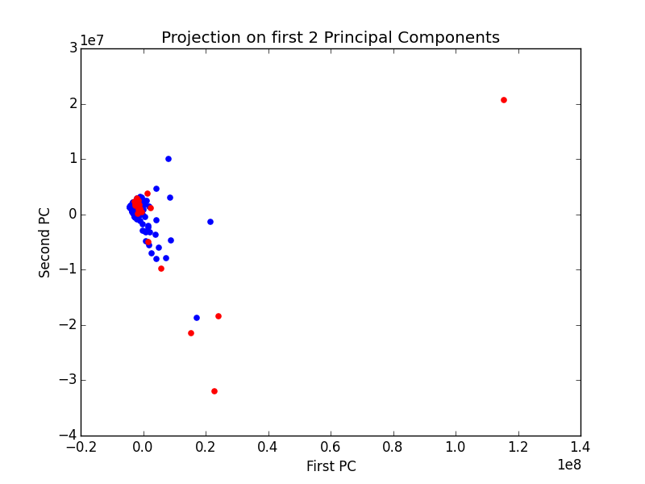
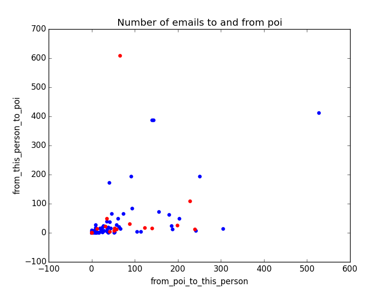
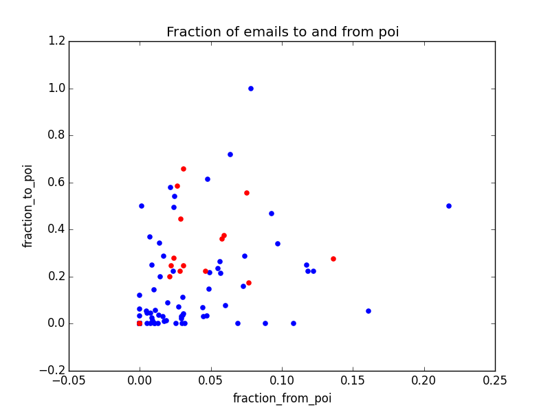

This project is an application of machine learning for identifying persons that were involved in fraud at Enron. Machine learning can be used to detect those persons by investigating financial and email data of Enron employees, to find patterns
Enron is a case of large scale corporate fraud in USA. During prosecution, the court decided to make public the financial data and also the emails. Enron executives decided to destroy a lot of documents while they were in prosecution. This fact may have contributed to the decision of the court to make the emails public.
The first step is loading the data and playing with it to understand the structure. I usually do this in a console. For this project the provided pickle file contains a dictionary, with the keys as strings containting the names of enron employees, and the values as dictionaries that contain some features.
Number of elements:
146
Number of pois:
18
Actually, there were 35 persons involved in fraud, but the data set we have available only contains about half of them. This may be a problem, the number of examples of persons involved in fraud is very small, and it will be very hard to find meaningful patterns.
We may have biased results. Any investigation we perform will be incomplete, and most likely biased (unless the people missing would be randomly selected, such that the sample we have is statistically representative, but this is unlikely due to the very limited examples).
For a machine learning project, there’s not much difference between 18 and 35 data points. This dataset is definitely small, and hence difficult to asses the accuracy.
Features available: 21
In order to select the most useful features, I wanted to see what features have missing values, and how many missing values are there in each feature.
Here’s my result:
| Feature name | Percent of non-Nan |
|---|---|
| total_stock_value |
0.868965517241
|
| total_payments |
0.862068965517
|
| restricted_stock |
0.758620689655
|
| exercised_stock_options |
0.703448275862
|
| salary |
0.655172413793
|
| expenses |
0.655172413793
|
| other |
0.641379310345
|
| to_messages |
0.593103448276
|
| shared_receipt_with_poi |
0.593103448276
|
| from_messages |
0.593103448276
|
| from_poi_to_this_person |
0.593103448276
|
| from_this_person_to_poi |
0.593103448276
|
| bonus |
0.565517241379
|
| long_term_incentive |
0.455172413793
|
| deferred_income |
0.337931034483
|
| deferral_payments |
0.268965517241
|
| restricted_stock_deferred |
0.124137931034
|
| director_fees |
0.11724137931
|
| loan_advances |
0.0275862068966
|
For now I’ll select only the features that have at least 50% of values filled (non-NaN values), so the green ones I selected for further investigation. Later I may slect from those the features that have the best predicting power.
Rather than trying to guess on what features the outliers may be observed, I decided to use PCA for this. If a point in our data set has a large deviation from most of the points, this large deviation should be caught by the first couple of principal components.
An important aspect here is that if I remove a point from the data set, I should run PCA again because the principal components are greatly influenced by outliers. The new principal components may lay in different directions.
The first plot (red points are poi):

The point that has a value of over
"TOTAL"
So this is clearly an outlier that comes from the spreadsheet from which this data was exported. We are looking to compare employers of Enron, so the total of all salaries, bonuses, etc, should not be in our data set.
I remove it and repeat.
The second plot:

I will print the top two elements from the second component, and also the smallest one from the second component:
['BHATNAGAR SANJAY', 'LAY KENNETH L']
'HIRKO JOSEPH'
Ok, so they are Enron employees, I’ll leave them in the data set.
Except those features, we can also use the emails. I ran some experiments on text, to see what words a Decision Tree algorithm uses to distinguish between emails from two persons, Sara Shackelton and Chris Germany. Here is my output:
train acc: 1.0
test acc: 0.983333333333
Most important feature, and relative importance: cgermannsf : 0.973656480506
train acc: 1.0
test acc: 0.966666666667
Most important feature, and relative importance: sara : 0.923103212577
train acc: 1.0
test acc: 1.0
Most important feature, and relative importance: tjonesnsf : 0.51800776543
train acc: 1.0
test acc: 0.866666666667
Most important feature, and relative importance: chris : 0.437839234944
train acc: 1.0
test acc: 0.933333333333
Most important feature, and relative importance: shackleton : 0.321660482375
--------------------
top 5 most important words:
[u'cgermannsf', u'sara', u'tjonesnsf', u'chris', u'shackleton']
It looks like all those are signature words. I’m concerned that for deciding whether a person is a poi or not, an algorithm using text may rely on previously known information. This decision tree can reach 100% accuracy, but it only looks at the signatures of the emails.
In case of a poi vs non-poi classifier, the algorithm may rely on names of persons rather than more complex vocabulary to detect suspicious activity.
I’ll try to engineer a feature from the data set available.
If I plot the number of sent emails to poi vs number of emails received from poi, I get the following plot:

There doesn’t seem to be a pattern here. I’ll try to compute the fraction of emails send to poi and received from poi rather than the number of emails.

This plot looks good. There’s not a very strong separation between poi and non-poi, but there is some separation. There are areas in this plot where there are only non-poi.
First I’ll try a couple of classifiers out of the box. I’ll test the following classifiers:
The results are the following:
GaussianNB
()
Accuracy: 0.83787
Precision: 0.32524
Recall: 0.20100
F1: 0.24845
F2: 0.21763
Total predictions: 15000
True positives: 402
False positives: 834
False negatives: 1598
True negatives: 12166
Got a divide by zero when trying out:
SVC
(C=1.0, cache_size=200, class_weight=None, coef0=0.0,
decision_function_shape=None, degree=3, gamma=’auto’, kernel=’rbf’,
max_iter=-1, probability=False, random_state=None, shrinking=True,
tol=0.001, verbose=False)
Precision or recall may be undefined due to a lack of true positive predicitons.
DecisionTreeClassifier
(class_weight=None, criterion=’gini’, max_depth=None,
max_features=None, max_leaf_nodes=None, min_samples_leaf=1,
min_samples_split=2, min_weight_fraction_leaf=0.0,
presort=False, random_state=None, splitter=’best’)
Accuracy: 0.82813
Precision: 0.35026
Recall: 0.33800
F1: 0.34402
F2: 0.34038
Total predictions: 15000
True positives: 676
False positives: 1254
False negatives: 1324
True negatives: 11746
AdaBoostClassifier
(algorithm=’SAMME.R’, base_estimator=None,
learning_rate=1.0, n_estimators=50, random_state=None)
Accuracy: 0.84353
Precision: 0.38712
Recall: 0.29750
F1: 0.33644
F2: 0.31194
Total predictions: 15000
True positives: 595
False positives: 942
False negatives: 1405
True negatives: 12058
KNeighborsClassifier
(algorithm=’auto’, leaf_size=30, metric=’minkowski’,
metric_params=None, n_jobs=1, n_neighbors=5, p=2,
weights=’uniform’)
Accuracy: 0.88727
Precision: 0.75537
Recall: 0.22850
F1: 0.35086
F2: 0.26554
Total predictions: 15000
True positives: 457
False positives: 148
False negatives: 1543
True negatives: 12852
LogisticRegression
(C=1.0, class_weight=None, dual=False, fit_intercept=True,
intercept_scaling=1, max_iter=100, multi_class=’ovr’, n_jobs=1,
penalty=’l2’, random_state=None, solver=’liblinear’, tol=0.0001,
verbose=0, warm_start=False)
Accuracy: 0.73460
Precision: 0.10648
Recall: 0.13400
F1: 0.11866
F2: 0.12741
Total predictions: 15000
True positives: 268
False positives: 2249
False negatives: 1732
True negatives: 10751
I will use the
Where:
This metric considers precision and recall as equaly important. There are other metrics that put more weight on either precision or recall (
Using
I’ll use GridCV to find the best tuning parameters. I’ll start with KNN
A potential limitation of this algorithm in this case is the fact that we have a very small number of positive examples. Since the algorithm relies on nearest points, it may be difficult to obtain high recall. It will output negative for most of the times, since it has very few examples of positive pois. This can be solved using different weights for positive and negative classes.
KNeighborsClassifier
(algorithm=’auto’, leaf_size=30, metric=’minkowski’,
metric_params=None, n_jobs=1, n_neighbors=5, p=2,
weights=’uniform’)
Accuracy: 0.88727
Precision: 0.75537
Recall: 0.22850
F1: 0.35086
F2: 0.26554
Total predictions: 15000
True positives: 457
False positives: 148
False negatives: 1543
True negatives: 12852
This looks the same as the KNC I had before.
DecisionTreeClassifier
(class_weight=None, criterion=’gini’, max_depth=None,
max_features=None, max_leaf_nodes=None, min_samples_leaf=1,
min_samples_split=2, min_weight_fraction_leaf=0.0,
presort=False, random_state=None, splitter=’best’)
Accuracy: 0.82573
Precision: 0.33893
Recall: 0.32300
F1: 0.33077
F2: 0.32607
Total predictions: 15000
True positives: 646
False positives: 1260
False negatives: 1354
True negatives: 11740
The Decision Tree has better recall, but lower precision. The
Testing the new features
I will test the performance of the algorithm with and without the new features:
Selecting best features for Decision Tree
Performance with all features
| Feature | Importance |
|---|---|
| bonus |
0.397261173535
|
| expenses |
0.23848965585
|
| restricted_stock |
0.121017988532
|
| total_payments |
0.10882132898
|
| other |
0.106100795756
|
| fraction_to_poi |
0.0283090573472
|
| total_stock_value |
0.0
|
| exercised_stock_options |
0.0
|
| salary |
0.0
|
| to_messages |
0.0
|
| shared_receipt_with_poi |
0.0
|
| from_messages |
0.0
|
| from_poi_to_this_person |
0.0
|
| from_this_person_to_poi |
0.0
|
| fraction_from_poi |
0.0
|
DecisionTreeClassifier(class_weight=None, criterion=’gini’, max_depth=None,
max_features=None, max_leaf_nodes=None, min_samples_leaf=1,
min_samples_split=2, min_weight_fraction_leaf=0.0,
presort=False, random_state=None, splitter=’best’)
Accuracy: 0.82527
Precision: 0.34085
Recall: 0.33250
F1: 0.33662
F2: 0.33414
Total predictions: 15000
True positives: 665
False positives: 1286
False negatives: 1335
True negatives: 11714
Performance without ‘fraction_from_poi’ and ‘fraction_to_poi’
Selecting best features for Decision Tree
| Feature | Importance |
|---|---|
| bonus |
0.397261173535
|
| expenses |
0.23848965585
|
| total_payments |
0.10882132898
|
| other |
0.106100795756
|
| from_poi_to_this_person |
0.0757862826828
|
| restricted_stock |
0.0620731020005
|
| from_this_person_to_poi |
0.0114676611954
|
| total_stock_value |
0.0
|
| exercised_stock_options |
0.0
|
| salary |
0.0
|
| to_messages |
0.0
|
| shared_receipt_with_poi |
0.0
|
| from_messages |
0.0
|
DecisionTreeClassifier(class_weight=None, criterion=’gini’, max_depth=None,
max_features=None, max_leaf_nodes=None, min_samples_leaf=1,
min_samples_split=2, min_weight_fraction_leaf=0.0,
presort=False, random_state=None, splitter=’best’)
Accuracy: 0.80233
Precision: 0.25320
Recall: 0.24750
F1: 0.25032
F2: 0.24862
Total predictions: 15000
True positives: 495
False positives: 1460
False negatives: 1505
True negatives: 11540
So those features clearly affect the performance of the Decision Tree. At least
fraction_to_poi
should be included in the algorithm.
Out of the features that I selected in the begining, I’ll select now only the most useful ones, based on the importance assigned by the Decision Tree algorithm.
I decided to implement my own selection of features because in case of SelectKBest function, I don’t know what the K should be (although it’s true I can find this out, but I’d like to write code to figure this out, rather than manually inspect and code with the number of features I found). The same is true in case of SelectPercentile. I don’t know what percentage of features are useful. But I can look at the importance of features, and select all features that contrubute with at least 1% (in the case of decision trees, this means select features that are used to distinguish at least 1% of the data).
I performed this selection, and ended up with only a handful of features:
For final classifier, will pick the best of:
| Feature | Importance |
|---|---|
| bonus |
0.397261173535
|
| restricted_stock |
0.168173897756
|
| other |
0.132625994695
|
| total_payments |
0.10882132898
|
| expenses |
0.105863661155
|
| from_poi_to_this_person |
0.0589448865311
|
| fraction_to_poi |
0.0283090573472
|
| total_stock_value |
0.0
|
| exercised_stock_options |
0.0
|
| salary |
0.0
|
| to_messages |
0.0
|
| shared_receipt_with_poi |
0.0
|
| from_messages |
0.0
|
| from_this_person_to_poi |
0.0
|
| fraction_from_poi |
0.0
|
So when I test the algorithm only with the features highlighted in green I get the following result:
Feature importances for final classifier
| Feature | Importance |
|---|---|
| total_payments |
0.315958946149
|
| restricted_stock |
0.224691893457
|
| exercised_stock_options |
0.171111111111
|
| total_stock_value |
0.1322681593
|
| salary |
0.100088785949
|
| expenses |
0.055881104034
|
DecisionTreeClassifier(class_weight=None, criterion=’gini’, max_depth=None,
max_features=None, max_leaf_nodes=None, min_samples_leaf=1,
min_samples_split=2, min_weight_fraction_leaf=0.0,
presort=False, random_state=None, splitter=’best’)
Accuracy: 0.82833
Precision: 0.35111
Recall: 0.33900
F1: 0.34495
F2: 0.34136
Total predictions: 15000
True positives: 678
False positives: 1253
False negatives: 1322
True negatives: 11747
So we can see that the accuracy is about the same. I think we can use this subset of features to investigate.
Note: For Decision Trees scaling is not necesary. Decision trees look for the best split for one variable at a time. If the variable is scaled, the split point will be at a different location (different numerical value), but it won’t make any difference for the classification process.
I would like to point out that some features that were provided in the data set may be responsible for information leakage. Thise features are
from_poi_to_this_person
,
from_this_person_to_poi
and
shared_receipt_with_poi
. Those values are computed using the whole data set. In other words, in order to find this information, the values of those variables, we needed to know who is a poi. In orded to compute those numbers, the whole data set was used, both the train set and the test set. In the real world though, we may identify a couple of pois (a small number, 2-3) and then compute those features using only the pois that we identified. In that case, the features will have less predictive power, because we won’t count shared emails or receipts between all pois, only between the ones we identified.
Validation is the process of determining the performance of the algorithm. For validation it is necesary to split the available data in training and test data. The algorithm will be trained on the training data only, and it never sees the corect results for test data. We then apply the classification algorithm on the test data, and compare it with the real values.
In order to validate an algorithm we need an objective way to asses its performance. We have to use some metrics like precision, recall,
This particular project has some limitations because the data set is very small. As I showed in the introduction, there are 18 pois out of 145 (after I removed the “TOTAL” there are 145 points left in the data set).
Because there are unbalanced examples (a lot of non-pois and just a couple of pois), it is necesary to use
precision
and
recall
to asses the performance of the algorithm.
Some algorithms favor precision over recall (like KNC), while others can be tuned to find a balance point in-between.
Precision measures the ratio of corectly identified events (persons of interest in this case), over the number of events reported positive by the algorithm. For example, KNC has high precision, this is because KNC clasifies a point based on the similarity with other points. But because there are a lot of negative examples in the data set, the clasifier is more likely to find examples of negative points (non-poi). On the other hand, when it does report a poi, this point is most likely in the center of other pois, so it’s very likely a poi. An algorithm with high precision might miss edge cases, but when it does output a point as a poi, it is very likely a poi.
Recall measures the ratio of corectly identified points (pois in this case) out of all positive points. If an algorithm has high recall, if there is a poi in the data set, the algorithm is very likely to find it. On the other hand, it may output a lot of false positive. Note that it is very easy to create an algorithm with recall=1, simply output true for every element.
I also consider
Where:
In this project I showed how Machine Learning could be used to identify persons involved in fraud using financial data and some agregated data about email activity. This particular data set is pretty small, so the results may not be great, but even so, the final classifier has 0.82 accuracy, with precision and recall about 0.33. I believe Machine Learning can be used for this application to obtain some insight into the fraudulent activity. Also, Machine Learning can be used with similar information about employees to asses engagement level of employees, or probability that they will switch jobs.